Daily screen time distribution
Based on the 15,000-record Kaggle dataset.
Twelve full-size, readable exploratory charts with observation, interpretation and research implication beneath every chart.
Charts use vector SVG for sharp, zoomable text. Hexbin plots summarize dense scatter data so overlapping points remain visible.
Based on the 15,000-record Kaggle dataset.
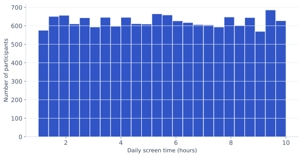
Observation: Daily screen time ranges from 1 to 10 hours, averaging 5.50 hours.
Interpretation: The sample covers a broad range of exposure rather than a single usage level.
Research implication: Establishes the independent variable distribution and helps identify extremes.
Based on the 15,000-record Kaggle dataset.
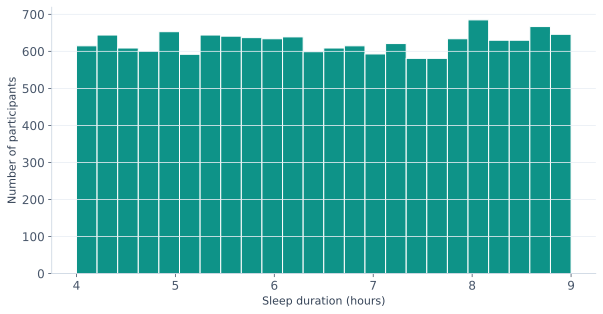
Observation: Sleep duration ranges from 4 to 9 hours; the mean is 6.51 hours.
Interpretation: Nightly sleep duration varies considerably in the sample.
Research implication: Provides context for evaluating the sleep-duration hypothesis.
Based on the 15,000-record Kaggle dataset.
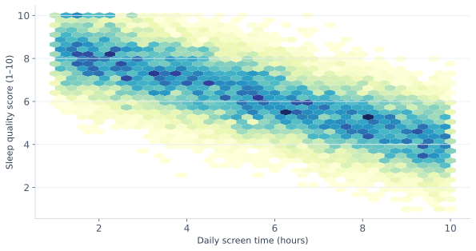
Observation: The Pearson correlation is r = -0.747.
Interpretation: Higher screen time is strongly associated with lower reported sleep quality.
Research implication: Supports H1 as an association, without establishing causation.
Based on the 15,000-record Kaggle dataset.
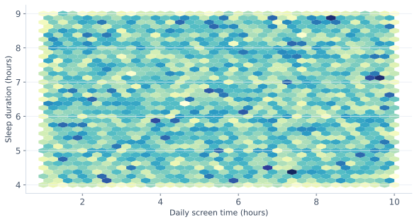
Observation: The Pearson correlation is r = -0.002.
Interpretation: Daily screen time has almost no linear relationship with sleep duration here.
Research implication: Shows that sleep quality and hours slept are distinct outcomes.
Based on the 15,000-record Kaggle dataset.
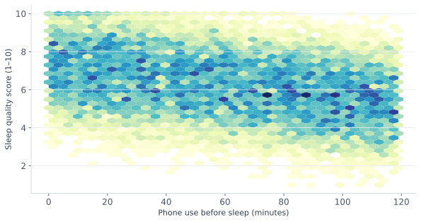
Observation: The Pearson correlation is r = -0.335.
Interpretation: More phone use before sleep is moderately associated with lower sleep quality.
Research implication: Addresses the role of pre-bedtime exposure, although H2 specifies duration.
Based on the 15,000-record Kaggle dataset.
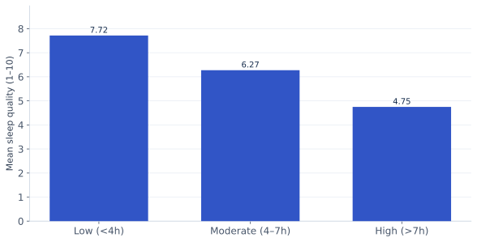
Observation: Mean sleep quality differs across low, moderate and high exposure groups.
Interpretation: The grouped view makes the negative screen-quality relationship easier to compare.
Research implication: Illustrates group differences relevant to H1.
Based on the 15,000-record Kaggle dataset.
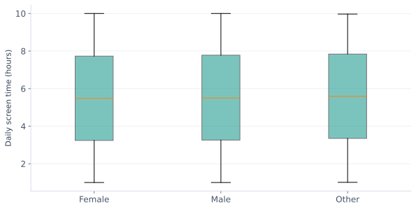
Observation: Screen-time distributions overlap across reported gender groups.
Interpretation: Group variation should be considered alongside the overall relationship.
Research implication: Examines group differences and potential confounding patterns.
Based on the 15,000-record Kaggle dataset.
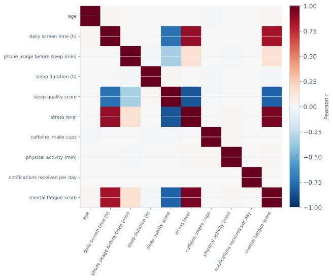
Observation: Screen time, stress and sleep quality show notable correlations, while some pairs are near zero.
Interpretation: Multiple variables may be related to the reported outcome.
Research implication: Helps identify candidate covariates and cautions against causal conclusions.
Based on the 15,000-record Kaggle dataset.
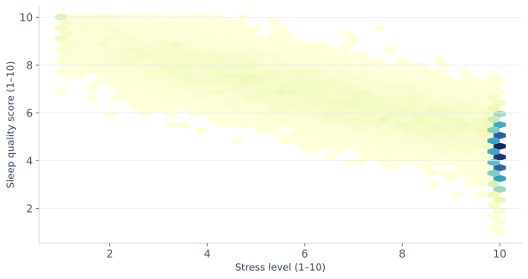
Observation: The Pearson correlation is r = -0.857.
Interpretation: Higher stress is strongly associated with lower sleep quality in this dataset.
Research implication: Highlights an important alternative explanation to consider.
Based on the 15,000-record Kaggle dataset.
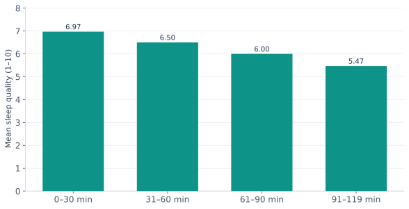
Observation: Mean sleep quality varies across pre-sleep phone-use bands.
Interpretation: Grouping phone minutes reveals an interpretable pattern.
Research implication: Extends the pre-bedtime analysis beyond a single correlation.
Based on the 15,000-record Kaggle dataset.
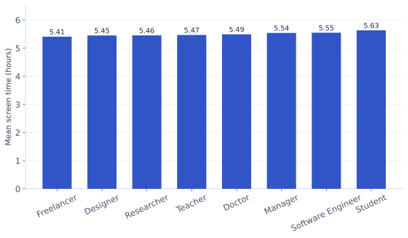
Observation: Average daily screen time differs across occupation categories.
Interpretation: Occupation may influence digital exposure patterns.
Research implication: Shows why the full sample cannot be treated as students only.
Based on the 15,000-record Kaggle dataset.
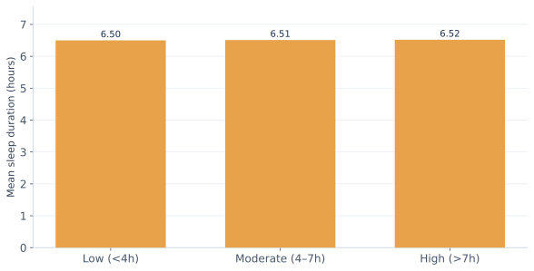
Observation: Mean sleep duration is similar across the three exposure groups.
Interpretation: A large quality difference need not imply a duration difference.
Research implication: Provides a group-level check on the duration hypothesis.
Outliers and anomalies: IQR checks were performed and all records were retained; range-bound scores may show extreme values without being invalid. Missing-data patterns: no missing values were found. Trends: the data have no date or time-series field, so chronological trends cannot be assessed; the charts instead show cross-sectional exposure patterns. Correlations: Pearson coefficients summarize linear association, not cause and effect.